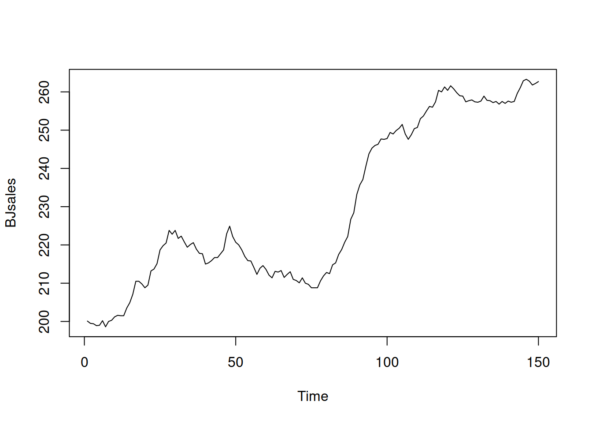

3.4 Likelihood Approach
We will use different estimation techniques throughout this book, one of the main of which is Maximum Likelihood Estimate (MLE). The very rough idea of the approach is to maximise the chance that each observation in the sample follows a pre-selected distribution with specific set of parameters. In a nutshell, what we try to do when using likelihood for estimation, is fit the distribution function to the data. In order to demonstrate this idea, we start in a non-conventional way, with an example in R. We will then move to the mathematical side of the problem.
3.4.1 An example in R
We consider a simple example, when we want to estimate the model \(y_t = \mu_y + \epsilon_t\) (global average), assuming that the error term follows normal distribution: \(\epsilon_t \sim \mathcal{N}(0, \sigma^2)\), which means that \(y_t \sim \mathcal{N}(\mu_{y}, \sigma^2)\). In this case we want to estimate two parameters using likelihood: \(\hat{\mu}_y\) and \(\hat{\sigma}^2\). First, we generate the random variable in R and plot its distribution:
y <- rnorm(1000, 100, 10)
hist(y, xlim=c(50,150), main="", probability=TRUE)
As expected, the distribution of this variable (1000 observations) has the bell shape of Normal distribution. In order to estimate the parameters, for the distribution, we will try them one by one and see how the likelihood and the shape of the fitted curve to this histogram change. We start with \(\hat{\mu}_y=80\) and \(\hat{\sigma}=10\) just to see how the probability density function of normal distribution fits the data:
hist(y, xlim=c(50,150), main="", probability=TRUE)
lines(c(50:150),dnorm(c(50:150),80,10),col="red",lwd=2)
abline(v=80,col="red",lwd=2)Figure 3.10: ML example with Normal curve and \(\hat{\mu}_y=80\) and \(\hat{\sigma}=10\)
and we get the following log-likelihood value (we will discuss how this formula can be obtained later):
sum(dnorm(y,80,10,log=T))## [1] -5706.477In order for the normal distribution on 3.10 to fit the data well, we need to shift the estimate of \(\mu_y\) to the right, thus increasing the value to, let’s say, \(\hat{\mu}_y=90\):
hist(y, xlim=c(50,150), main="", probability=TRUE)
lines(c(50:150),dnorm(c(50:150),90,10),col="orange",lwd=2)
abline(v=90,col="orange",lwd=2)Figure 3.11: ML example with Normal curve and \(\hat{\mu}_y=90\) and \(\hat{\sigma}=10\)
Now, in Figure 3.11, the normal curve is much closer to the data, but it is still a bit off. The log-likelihood value in this case is -4216.671, which is higher than the previous one, indicating that we are moving towards the maximum of the likelihood function. Moving it further, setting \(\hat{\mu}_y=100\), we get:
hist(y, xlim=c(50,150), main="", probability=TRUE)
lines(c(50:150),dnorm(c(50:150),100,10),col="green3",lwd=2)
abline(v=100,col="green3",lwd=2)Figure 3.12: ML example with Normal curve and \(\hat{\mu}_y=100\) and \(\hat{\sigma}=10\)
Figure 3.11 demonstrates a much better fit than in the previous cases with the log-likelihood of -3726.864, which is even higher than in the previous case. We are almost there. In fact, in order to maximise this likelihood, we just need to calculate the sample mean of the variable (this is the MLE of the location parameter in normal distribution) and insert it in the function to obtain:
hist(y, xlim=c(50,150), main="", probability=TRUE)
lines(c(50:150),dnorm(c(50:150),mean(y),10),col="darkgreen",lwd=2)
abline(v=mean(y),col="darkgreen",lwd=2)Figure 3.13: ML example with Normal curve and \(\hat{\mu}_y=\bar{y}\) and \(\hat{\sigma}=10\)
So the value of \(\hat{\mu}_y=\bar{y}=\) 99.898 (where \(\bar{y}\) is the sample mean) maximises the likelihood function, resulting in log-likelihood of -3726.812.
In a similar fashion we can get the MLE of the scale parameter \(\sigma^2\) of the model. In this case, we will be changing the height of the distribution. Here is an example with \(\hat{\mu}_y=\) 99.898 and \(\hat{\sigma}=15\):
hist(y, xlim=c(50,150), main="", probability=TRUE)
lines(c(50:150),dnorm(c(50:150),mean(y),15),col="royalblue",lwd=2)
abline(v=mean(y),col="royalblue",lwd=2)Figure 3.14: ML example with Normal curve and \(\hat{\mu}_y=\bar{y}\) and \(\hat{\sigma}=15\)
Figure 3.14 demonstrates that the curve is located lower than needed, which implies that the scale parameter \(\hat{\sigma}\) is too high. The log-likelihood value in this case is -3851.562. In order to get a better fit of the curve to the data, we need to reduce the \(\hat{\sigma}\). Here how the situation would look for the case of \(\hat{\sigma}=10\):
hist(y, xlim=c(50,150), main="", probability=TRUE)
lines(c(50:150),dnorm(c(50:150),mean(y),10),col="darkblue",lwd=2)
abline(v=mean(y),col="darkblue",lwd=2)Figure 3.15: ML example with Normal curve and \(\hat{\mu}_y=\bar{y}\) and \(\hat{\sigma}=10\)
The fit on Figure 3.15 is better than on Figure 3.14, which is also reflected in the log-likelihood value being equal to -3726.812 instead of -3851.562. The best fit and the maximum of the likelihood is obtained, when the scale parameter is estimated using the formula \(\hat{\sigma}^2 = \frac{1}{T}\sum_{t=1}^T\left(y_t - \bar{y}\right)^2\), resulting in log-likelihood of -3726.785. Note that if we use the unbiased estimate of the variance \(\hat{s}^2 = \frac{1}{T-1}\sum_{t=1}^T\left(y_t - \bar{y}\right)^2\), the log-likelihood will not reach the maximum and will be equal to -3726.785. In our special case the difference between the two is infinitesimal, because of the large sample (1000 observations), but it will be more substantial on small samples. Still, the two likelihood values are diffrent, which can be checked in R via the following commands:
# The maximum log-likelihood with the biased variance
logLik01 <- sum(dnorm(y,mean(y),sqrt(mean((y-mean(y))^2)),log=TRUE))
# The log-likelihood value with the unbiased variance
logLik02 <- sum(dnorm(y,mean(y),sd(y),log=TRUE))
# The difference between the two
logLik01 - logLik02All of this is great, but so far we have discussed a very special case, when the data follows normal distribution and we fit the respective model. But what if the model is wrong (no kidding!)? In that case the idea stays the same: we need to find the parameters of the normal distribution, that would guarantee the best possible fit to the non-normal data. Here is an example with MLE of parameters of Normal distribution for the data following Log Normal one:
y <- rlnorm(1000, log(80), 0.4)
hist(y, main="", probability=T, xlim=c(0,300))
lines(c(0:300),dnorm(c(0:300),mean(y),sd(y)),col="blue",lwd=2)Figure 3.16: ML example with Normal curve on Log Normal data
Figure 3.16 shows that the Normal model does not fit the Log Normal data properly, but this is the best we can get, given our assumptions. The log-likelihood in this case is -5034.319. The much better model would be the Log Normal one:
hist(y, main="", probability=T, xlim=c(0,300))
lines(c(0:300),dlnorm(c(0:300),mean(log(y)),sd(log(y))),col="red",lwd=2)Figure 3.17: ML example with Log Normal curve on Log Normal data
The model in Figure 3.17 has the log likelihood of -4915.125. This indicates that the Log Normal model is more appropriate for the data and gives us an idea that it is possible to compare different distributions via the likelihood, finding the better fit to the data. This idea is explored further in the next section.
As a final word, when it comes to more complicated models with more parameters and dynamic structure, the specific curves and data become more complicated, but the logic of the likelihood approach stays the same.
3.4.2 Mathematical explanation
Now we can discuss the same idea from the mathematical point of view. We use an example of normal distribution and a simple model as before: \[\begin{equation} y_t = \mu_{y} + \epsilon_t, \tag{3.27} \end{equation}\] where \(\mu_{y}\) is the population location parameter (the true parameter, the global mean). The typical assumption in regression context is that \(\epsilon_t \sim \mathcal{N}(0, \sigma^2)\), which means that \(y_t \sim \mathcal{N}(\mu_{y}, \sigma^2)\). We can use this assumption in order to calculate the point likelihood value for each observation based on the PDF of Normal distribution: \[\begin{equation} \mathcal{L} (\mu_{y}, \sigma^2 | y_t) = f(y_t | \mu_{y}, \sigma^2) = \frac{1}{\sqrt{2 \pi \sigma^2}} \exp \left( -\frac{\left(y_t - \mu_{y,t} \right)^2}{2 \sigma^2} \right). \tag{3.28} \end{equation}\] Very roughly, what the value (3.28) shows is the chance that the specific observation comes from the assumed model with specified parameters (we know that in real world the data does not come from any model, but this interprertation is easier to work with). Note that the likelihood is not the same as probability, because for any continuous random variables the probability for it to be equal to any specific number is equal to zero. However, the idea of likelihood has some similarities with the probability, so we prefer to refer to it as a “chance.” The point likelihood (3.28) is not very helpful on its own, but we can get \(T\) values like that, based on our sample of data. We can then summarise it in one number, that would characterise the whole sample, given the assumed distribution, applied model and selected values of parameters: \[\begin{equation} \mathcal{L} (\boldsymbol{\theta} | \mathbf{y}) = \mathcal{L} (\mu_{y}, \sigma^2 | \mathbf{y}) = \prod_{t=1}^T f(y_t | \mu_{y}, \sigma^2), \tag{3.29} \end{equation}\] where \(\boldsymbol{\theta}\) is the vector of all parameters in the model (in our example, it is just the two of them). We take the product of likelihoods in (3.29) because we need to get the joint likelihood for all observations and because we can typically assume that the point likelihoods are independent of each other (for example, the value on observation \(t\) will not be influenced by the value on \(t-1\)). The value (3.29) shows the summary chance that the data comes from the assumed model with specified parameters. Having this value, we can change the values of parameters of the model, getting different value of (3.29) (as we did in the example above). Using an iterative procedure, we can get such estimates of parameters that would maximise the likelihood (3.29), which are called Maximum Likelihood Estimates (MLE) of parameters. However, working with the products in that formula is difficult, so typically we linearise it using natural logarithm, obtaining log-likelihood: \[\begin{equation} \ell (\boldsymbol{\theta} | \mathbf{y}) = \log \mathcal{L} (\boldsymbol{\theta} | \mathbf{y}) = -\frac{T}{2} \log(2 \pi \sigma^2) -\sum_{t=1}^T \frac{\left(y_t - \mu_{y,t} \right)^2}{2 \sigma^2} . \tag{3.30} \end{equation}\] Based on that, we can find some of parameters of the model analytically. For example, we can take derivative of (3.30) with respect to the scale \(\hat{\sigma}^2\) (which is an estimate of the true parameter \(\sigma^2\)) and equate it to zero in order to find the value that maximises the log-likelihood function in our sample: \[\begin{equation} \frac{d \ell (\boldsymbol{\theta} | \mathbf{y})}{d \hat{\sigma}^2} = -\frac{T}{2} \frac{1}{\hat{\sigma}^2} + \frac{1}{2 \hat{\sigma}^4}\sum_{t=1}^T \left(y_t - \mu_{y,t} \right)^2 =0 , \tag{3.31} \end{equation}\] which after multiplication of both sides by \(2 \hat{\sigma}^4\) leads to: \[\begin{equation} T \hat{\sigma}^2 = \sum_{t=1}^T \left(y_t - \mu_{y,t} \right)^2 , \tag{3.32} \end{equation}\] or \[\begin{equation} \hat{\sigma}^2 = \frac{1}{T}\sum_{t=1}^T \left(y_t - \mu_{y,t} \right)^2 . \tag{3.33} \end{equation}\] The value (3.33) is in fact a Mean Squared Error (MSE) of the model. If we calculate the value of \(\hat{\sigma}^2\) using the formula (3.33), we will maximise the likelihood with respect to the scale parameter. In fact, we can insert (3.33) in (3.30) in order to obtain the so called concentrated (or profile) log-likelihood for the normal distribution: \[\begin{equation} \ell^* (\boldsymbol{\theta}, \hat{\sigma}^2 | \mathbf{y}) = -\frac{T}{2}\left( \log(2 \pi e) + \log \hat{\sigma}^2 \right) . \tag{3.34} \end{equation}\] This function is useful because it simplifies some calculations and also demonstrates the condition, for which the likelihood is maximised: the first part on the right hand side of the formula does not depend on the parameters of the model, it is only the \(\log \hat{\sigma}^2\) that does. So, the maximum of the concentrated log-likelihood (3.34) is obtained, when \(\hat{\sigma}^2\) is minimised, implying the minimisation of MSE, which is the mechanism behind the “Ordinary Least Squares” (OLS) ) estimation method. By doing this, we have just demonstrated that if we assume normality in the model, then the estimates of its parameters obtained via the maximisation of the likelihood coincide with the values obtained from OLS. So, why bother with MLE, when we have OLS?
First, the finding above holds for normal distribution only. If we assume a different distribution, we would get different estimates of parameters. In some cases, it might not be possible or reasonable to use OLS, but MLE would be a plausible option (for example, logistic, Poisson and any other non-standard model).
Second, the MLE of parameters have good statistical properties: they are consistent and efficient. These properties hold almost universally for many likelihoods under very mild conditions. Note that the MLE of parameters are not necessarily unbiased, but after estimating the model, one can de-bias some of them (for example, calculate the standard deviation of the error via devision of the sum of squared errors by the number of degrees of freedom \(T-k\) instead of \(T\)).
Third, likelihood can be used for the model assessment, even when the standard statistics, such as \(R^2\) or F-test are not available. We do not discuss these aspects in this textbook.
Finally, it permits the model selection via information criteria. In general, this is not possible to do unless you assume a distribution and maximise the respective likelihood. In some statistical literature, you can notice that information criteria are calculated for the models estimated via OLS, but what the authors of such resources do not tell you is that there is still an assumption of normality behind this (see the link between OLS and MLE of Normal distribution above).
Note that the likelihood approach assumes that all parameters of the model are estimated, including location, scale, shape, shift etc of distribution. So typically it has more parameters to estimate than, for example, the OLS does. This is discussed in some detail later in the next section.